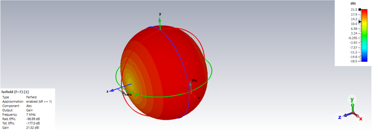
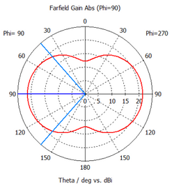
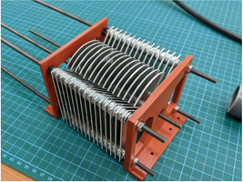
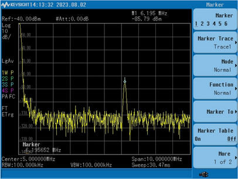
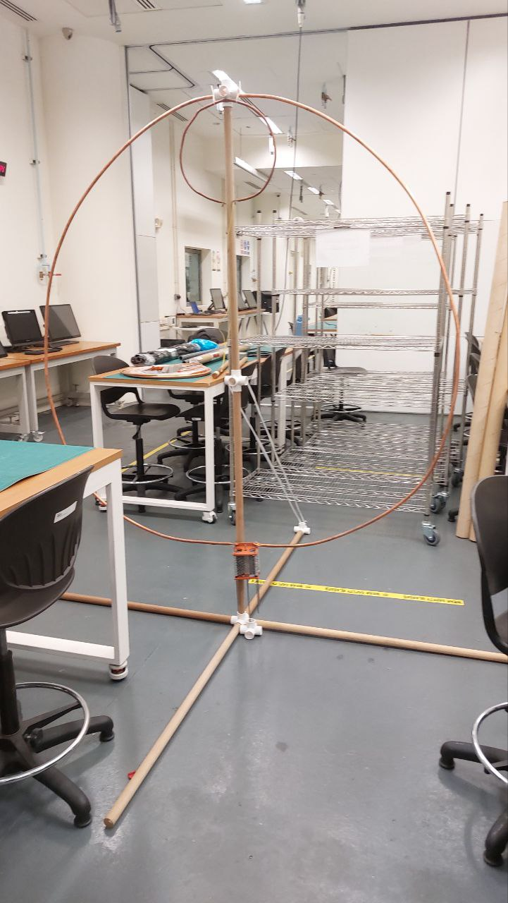
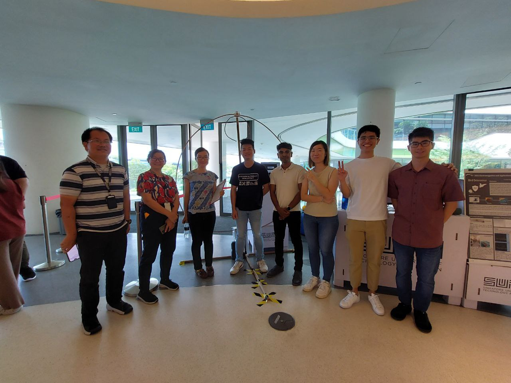

Bird Deterrence
Tags: Electromagnetism, CST Studio Suite, Antenna Fabrication, VNA,
Spectrum Analyzer
For my Electromagnetics & Applications module in term 5, my team
produced a loop antenna that was able to disrupt the navigation
abilities of birds to prevent them from eating unattended food at our
school canteen and defecating everywhere. Through our research, we
realized that birds have magneto-receptors in their beaks that contain
iron which respond to magnetic fields. This is a bio-magnetic compass
that responds to magnetic fields and provides directional or
quantitative information. By application of EM waves at specific
frequencies, we can disrupt the magnetic field and affect their sense
of direction, leading them away from our canteen. From our research,
these frequencies are mostly in the range of 0.1 to 10 MHz.
Controlling the mini VNA with our laptop, the desired 7 Mhz is
generated to ensure our antenna can meet one of the researched
specifications. To cover a wide range of birds and research scopes,
the mini VNA is then used to sweep across a range of 1 - 10 Mhz.
Before fabricating the antenna, we simulated the device using CST
Studio Suite to check if it could produce the frequencies that we
desired.


The magnetic loop antenna consists of a main loop and a coupling loop
to produce 6.2 MHz. Air variable capacitor connected to the coupling
loop is made to tune the operating frequency. This forms an effective
LC circuit to transmit magnetic waves. The air capacitor was a
butterfly capacitor fabricated by us. This is because at high voltage,
dielectrics may break down and thus we decided to use air as the
dielectric instead.


The device was tested with a spectral analyzer to check if it was
able to produce the desired frequency in the range. At 1 m away, we
were able to observe the peak at 6.20 MHz which was within the range
that we stipulated. We also tested the device outside, where we place
food near the antenna and switch it on for a period of 30 minutes. The
test was successful as no birds approached the food even though they
were in the area.

An exhibition of all the devices produced by my team was conducted
and I am proud to say that after seeing our project the school was
interested in testing out our device in our canteen and using it in
the future.
